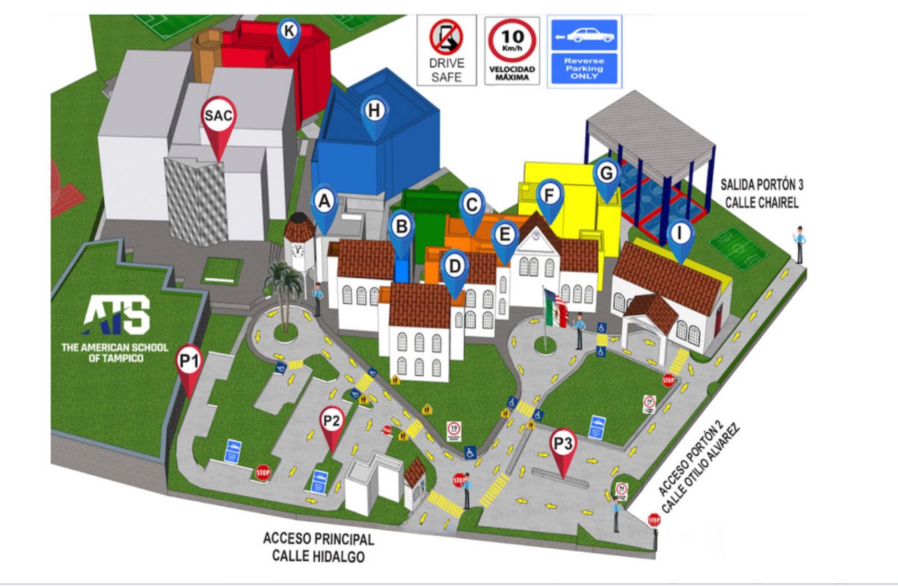

The American School of Tampico — Editor de Rutas
🔴 Trazar Rojo
🔵 Trazar Azul
↩ Deshacer
✕ Borrar Rojo
✕ Borrar Azul
▶ Animar
⏹ Detener
Presiona
Trazar Rojo
o
Trazar Azul
para empezar.

Rojo: 0 puntos
Azul: 0 puntos